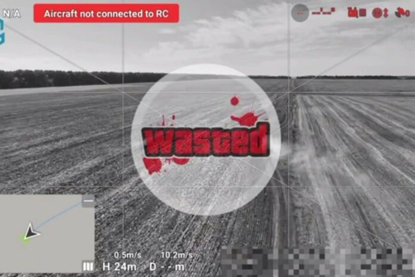

18:59 | 02.11.2023
В Україні успішно випробували у польових умовах комплекс радіоелектронної боротьби для захисту бронетехніки від російських дронів Piranha AVD 360. Його розробила українська компанія «Піранья-Тех». Відзначається, що комплекс готовий до серійного виробництва.
Про це повідомив міністр цифрової трансформації Михайло Федоров у Telegram.
«Комплекс створює захисний купол до 600 метрів навколо себе. Під дією системи коптер чи дрон-камікадзе не може отримувати команди та передавати дані. Як результат — «пташка» або зависає в повітрі, здійснює аварійну посадку, або безконтрольно падає. Також Piranha пригнічує системи супутникової навігації, наприклад, російську ГЛОНАСС», – написав він.
Джерело новини